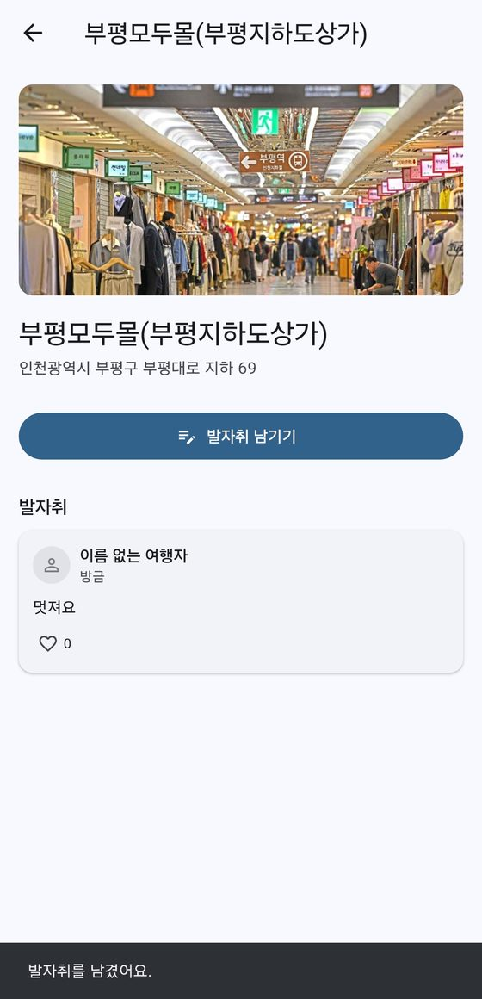
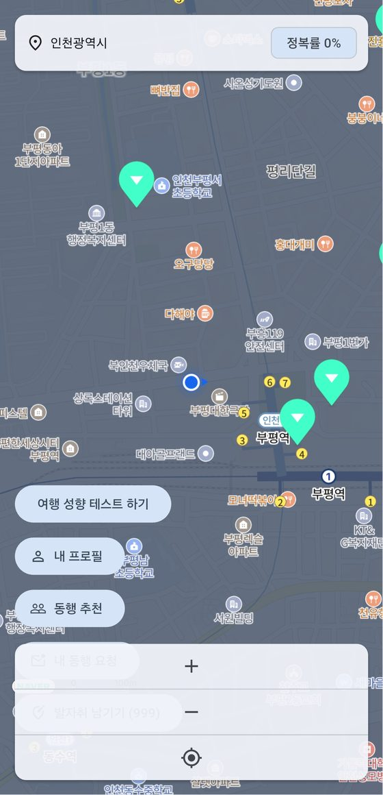
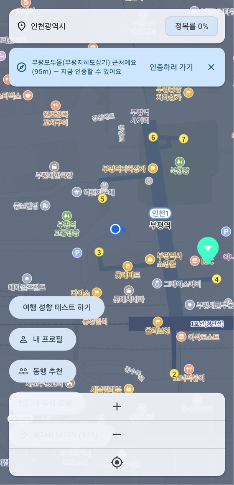
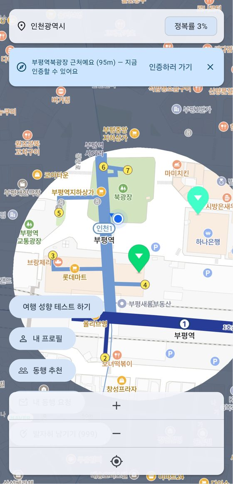
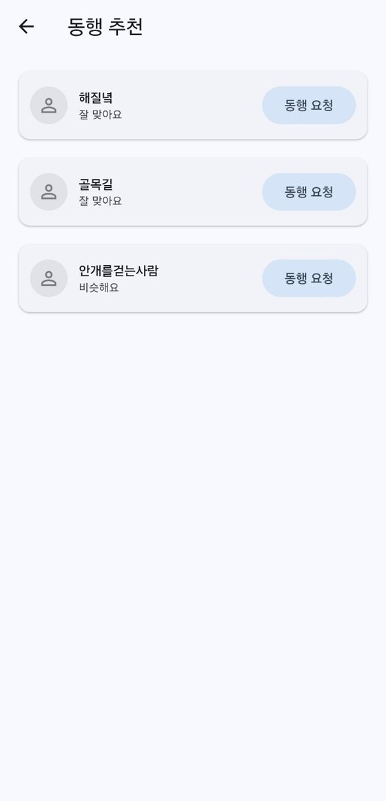

도달해야 열리는 지도
스팟 100m 안에 들어가면 알림이 오고, 현장 사진으로 인증하면 그 일대의 안개가 걷힙니다.
MOBILE APP / LOCATION BASED SERVICE
대한민국 전체가 안개로 덮여 있습니다.
그 자리에 직접 도착해야 안개가 걷히고, 무엇이 있었는지 드러납니다.

01 / OVERVIEW
여행 앱은 대개 가보지 않은 곳을 먼저 보여 줍니다. FogMap은 반대로 시작합니다. 전국이 회색 안개로 덮여 있고, 관광 스팟은 안개 아래 숨어 있어 가까이 가기 전에는 무엇인지 알 수 없습니다. 실제로 그 자리에 도착해 사진으로 인증해야 안개가 걷히고 스팟의 이름과 주소, 소개가 드러납니다.
스팟 데이터는 한국관광공사 OpenAPI에서 받아 옵니다. 안개를 걷어낼 때마다 시/도 단위 탐험률이 올라가고, 길 위에는 앞서 지나간 사람이 남긴 짧은 글귀가 떠 있습니다. 여행 성향이 비슷한 사람을 추천받아 동행을 요청할 수도 있습니다.
스팟 100m 안에 들어가면 알림이 오고, 현장 사진으로 인증하면 그 일대의 안개가 걷힙니다.
걷어낸 만큼 시/도 단위 탐험률이 올라가고, 탐험 현황 화면에서 전국 지도와 배지로 펼쳐집니다.
지나간 자리에 짧은 글을 남기고, 앞서 걸어간 사람의 글귀를 지도에서 발견해 읽습니다.
02 / MY ROLE
5인 팀에서 서버와 API를 맡고, 일정과 이슈를 관리했습니다. 저장소 전체 커밋 가운데 69개가 제 작업입니다. 기능 하나를 맡을 때는 스키마 마이그레이션부터 API, 앱에서의 사용까지 이어서 처리했습니다.
Spring Boot REST API와 Firebase ID 토큰 검증, 공통 예외·응답 형식을 잡고 도메인별 패키지로 나눴습니다.
Flyway 마이그레이션 13단계를 관리했습니다. 좌표 컬럼과 PostGIS geom을 함께 두고 트리거로 동기화했습니다.
스팟 수집 배치를 만들어 지역별 목록과 소개글을 받아 적재하고, 일일 호출 한도에 맞춰 나눠 채우도록 했습니다.
출품 절차를 8단계로 재편하고 마감 기준으로 이슈와 담당자를 배분했습니다. 시연 시나리오와 심사용 계정도 준비했습니다.
TECHNICAL DOCUMENTATION
위치 기반 서비스라 "정말 거기 갔는가"를 서버가 판단해야 합니다. 앱·서버·데이터베이스가 그 판단을 나눠 맡는 구조입니다.
03 / ARCHITECTURE
| 영역 | 기술 | 메모 |
|---|---|---|
| 앱 | Flutter 3.44.9 · Riverpod | 출품은 Android 단독, 지도는 Naver Maps SDK |
| 서버 | Spring Boot 3.3.2 · Java 17 | Gradle 8.8, 도메인별 패키지(auth·user·spot·tour·footprint·match) |
| 데이터베이스 | PostgreSQL 16 + PostGIS 3.4 | Flyway V1~V13, Hibernate는 검증만 |
| 인증 | Firebase Auth + Admin SDK | 앱이 받은 ID 토큰을 서버가 검증 |
| 알림 | FCM | 친구 요청·수락·새 메시지 (기기 토큰 테이블 V13) |
| 사진 | 서버 로컬 디스크 | 무료 요금제에서 Firebase Storage 버킷 생성이 막혀 서버 저장으로 결정 |
| 테스트 · CI | JUnit 5 · Testcontainers · GitHub Actions | 실제 PostGIS 컨테이너로 공간 쿼리까지 검증, 변경 영역만 빌드 |
주변 여행자 표시는 30분 간격이라 실시간 동기화가 필요 없었습니다. 계획에 있던 Firestore 대신 자체 서버 API로 처리하도록 다시 설계했습니다.
04 / EXPLORATION LOOP
안개는 스팟 주변만 걷히는 것이 아닙니다. 앱을 켜고 이동하면 약 15m마다 궤적이 서버에 쌓여, 걸어온 길을 따라 안개가 지워집니다. 이 기록은 본인만 볼 수 있고 탈퇴하면 함께 지워집니다.
| 메서드 | 경로 | 설명 |
|---|---|---|
| GET | /api/spots/nearby | 반경 내 스팟 조회 (PostGIS ST_DWithin, 최대 20km) |
| POST | /api/visits | 방문 인증 — 서버가 반경을 재검증, 1인 1스팟 1회 |
| GET | /api/visits | 내 인증 목록 — 앱이 걷힌 안개를 복원할 때 사용 |
| GET | /api/conquest | 지역별 탐험률 집계 |
| GET | /api/footprints/nearby | 내 주변 발자취 (최대 1km·200건) |
| GET | /api/matches/candidates | 성향 유사도 기반 동행 후보 추천 |
05 / FOOTPRINTS
처음에는 스팟에 대한 리뷰였습니다. 그런데 리뷰는 이미 다른 앱이 더 잘하고, 목적지에 도착한 사람만 쓸 수 있습니다. 그래서 스팟에 묶인 리뷰 대신 길목마다 남기는 짧은 글귀로 다시 설계했습니다. 지나가다 발견해 읽는 쪽이 이 앱의 걷는 경험과 맞았습니다.

07 / DATA & OPERATIONS
스팟은 한국관광공사 OpenAPI에서 지역별 목록을 받아 content_id 기준으로 업서트합니다. 소개글은 스팟을 해금했을 때 보여 주는 유일한 내용이라 목록 수집에 이어서 채웁니다.
로컬 개발은 Docker Compose로 PostGIS를 띄우고, 서버 테스트는 Testcontainers로 실제 PostGIS 컨테이너를 올려 공간 쿼리까지 확인합니다. CI는 app과 server 중 바뀐 쪽만 빌드하고, 앱은 APK를 아티팩트로 남깁니다.
08 / RELEASE
한국관광콘텐츠랩 API 활용 대회 앱·웹 개발 부문에 2026년 9월 14일 출품했습니다. 한국관광공사 관광 데이터를 활용하는 것이 대회의 전제라, 스팟 정보는 모두 관광공사 OpenAPI에서 받아 옵니다. 출품 요건에 "최소 1개 스토어 등록"이 있어, 개인 개발자 계정에 테스터 12명·14일 조건이 붙는 Google Play 대신 원스토어로 결정했습니다. 2026년 9월 21일 상품 등록을 마쳤습니다.
09 / SCREENS
인천 부평역 일대에서 실제로 걸으며 찍은 화면입니다. 근접 감지부터 사진 인증, 해금, 안개 해제, 탐험률 갱신까지 한 번에 이어집니다.




10 / REFERENCES
이 페이지는 FogMap2026 조직의 공개 저장소(dev 브랜치, 2026년 9월 기준)를 바탕으로 정리했습니다. 팀은 기능마다 이슈와 PR을 열고 리뷰를 거쳐 dev에 모은 뒤 main으로 태그를 올리는 방식으로 협업했습니다.
06 / SOCIAL
동행 추천과 익명 위치 공유
여행 성향 테스트로 즉흥형인지 계획형인지, 휴양인지 관광인지를 묻고, 성향이 비슷한 사람을 후보로 추천합니다. 동행 요청을 보내고 수락·거절하는 흐름까지 서버에서 처리합니다. 친구와 메시지 기능도 이어서 붙였습니다.
다른 사람에게 전달되는 것은 "어떤 스팟 근처에 있었다"는 사실과 시각뿐입니다. 정확한 좌표나 닉네임은 공개하지 않고, 30분이 지난 뒤에만 보이며, 기본값은 꺼짐입니다. 실시간 정밀 위치 공유는 감시에 가깝고 여행자에게 필요한 정보도 아니라고 판단했습니다.